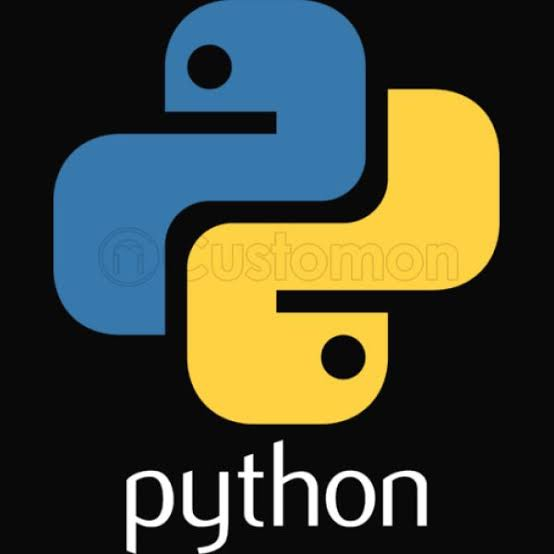
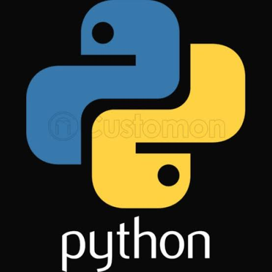

The corresponding links are below :


 

Bootstrap is a free and open-source CSS framework directed at responsive, mobile-first front-end web development. It contains CSS- and (optionally) JavaScript-based design templates for typography, forms, buttons, navigation and other interface components. Bootstrap is the third-most-starred project on GitHub, with more than 135,000 stars, behind only freeCodeCamp (almost 305,000 stars) and marginally behind Vue.js framework.[2] According to Alexa Rank, Bootstrap getbootstrap.com is in the top-2000 in US while vuejs.org is in top-7000 in US.[3] Bootstrap, originally named Twitter Blueprint, was developed by Mark Otto and Jacob Thornton at Twitter as a framework to encourage consistency across internal tools. Before Bootstrap, various libraries were used for interface development, which led to inconsistencies and a high maintenance burden. According to Twitter developer Mark Otto: A super small group of developers and I got together to design and build a new internal tool and saw an opportunity to do something more. Through that process, we saw ourselves build something much more substantial than another internal tool. Months later, we ended up with an early version of Bootstrap as a way to document and share common design patterns and assets within the company.[4] After a few months of development by a small group, many developers at Twitter began to contribute to the project as a part of Hack Week, a hackathon-style week for the Twitter development team. It was renamed from Twitter Blueprint to Bootstrap, and released as an open source project on August 19, 2011.[5] It has continued to be maintained by Mark Otto, Jacob Thornton, and a small group of core developers, as well as a large community of contributors.[6] On January 31, 2012, Bootstrap 2 was released, which added built-in support for Glyphicons, several new components, as well as changes to many of the existing components. This version supports responsive web design. This means the layout of web pages adjusts dynamically, taking into account the characteristics of the device used (desktop, tablet, mobile phone). [7] The next major version, Bootstrap 3, was released on August 19, 2013. It redesigned components to use flat design, and a mobile first approach.[8]